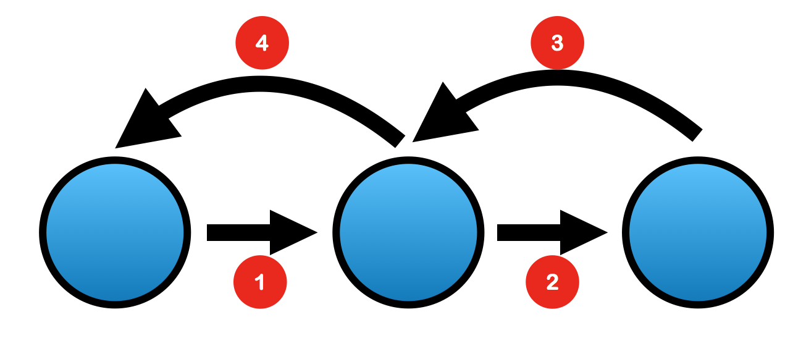

Recursion
The idea that a function can call itself. However, in order to build a recursive function, you need to have a
base case, which would prevent an infinite loop and end the function appropriately.
One could think of a recursive function as a loop in the form of a function.
Recur → To happen again
Recursion → A function that calls itself
Finding factorial example of recursive functions
Notice that the base case are the statements that at some point will be returning a value in order to prevent an infinite loop, and to complete the calculation; think of it terms of the condition being no longer true.#include <iostream>
using namespace std;
double factorialFinder(int i){
if(i==1){
return 1;
} else {
return i*factorialFinder(i-1);
}
}
int main(int argc, char *argv[]) {
int i;
cout << "Factorial finder" << endl;
cout << "Enter number: ";
cin >> i;
cout << factorialFinder(i) << endl;
return 0;
}
factorialFinder(5) would mean specifically:
5 * (factorial(4))
5 * (4 * (factorial(3)))
5 * (4 * (3 * (factorial(2))))
5 * (4 * (3 * (2 * (factorial(1)))))
5 * (4 * (3 * (2 * (1)))))
5 * 4 * 3 * 2 * 1 → 120
The following diagram illustrates what occurs when we call our recursive function.

Other uses
Traversing through folder directory would an example of a real world problem that could be solved using recursion.